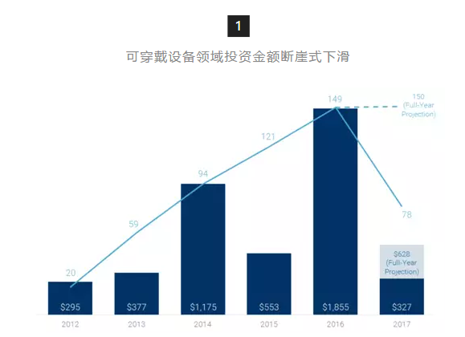
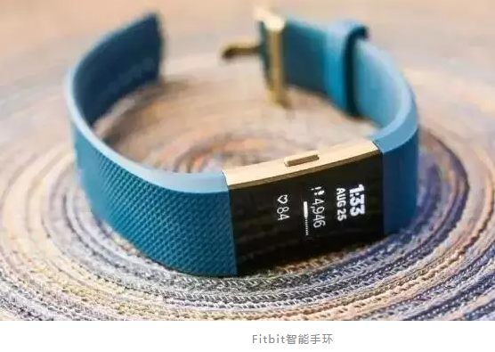
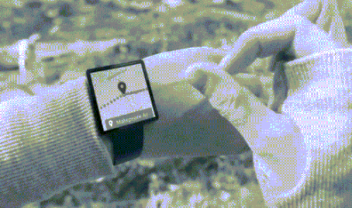

从风口到鸡肋，可穿戴设备亟待解决哪些问题？【星河研究院】
2017-07-18星河研究院
- 7月份的第一周，曾成长为硅谷独角兽的Jawbone宣布停止业务并清算其剩余资产。Jawbon成立于1997年，早期以制作硬件头设和扬声器闻名，后来专注于健身追踪器等可穿戴设备及相关软件产品。公司的最高估值曾达到32亿美元，总融资额达9.3亿美元，是消费级可穿戴设备的领军企业。
- Jawbone之死是可穿戴设备领域的里程碑事件，该领域的另一巨头Fitbit日子也不好过，虽然在2016年底以2300万美元收购了智能手表制造商Pebble，但这一举措并不明智。该公司2015年中期股价高达近48美元，后来暴跌至每股5美元。
- 曾经的热门领域在全盛时期受到打击，让众多科技界人士纷纷将审视的目光投向可穿戴设备领域。今天星河研究院将通过这篇文章来探讨可穿戴设备领域亟待解决的问题以及未来的出路。
- 
- 我们这里定义的可穿戴设备领域，包括开发可以佩戴或放置在身体上的电子设备的企业，还有可穿戴医疗设备、AR/VR头显等技术的企业。
- 从上面这张表我们可以看到可穿戴设备行业近年的投资情况：从投资数量来看自2012年以来都是上升的趋势，但投资总金额在2014年达到顶峰后开始下滑（2016年出现了Magic Leap等公司的高额融资，否则总融资额也不会超过2014年）。2017年到目前为止，可穿戴设备领域已经有78笔投资交易，总金额达到3.27亿美元。
- 风险投资的金额在下滑，主要原因是投资机构要开始规避高估值的风险，而且对于可穿戴设备带来的几乎类似的功能感到疲劳。因此，新进的可穿戴设备公司可能会受到融资压力。
- 目前的可穿戴设备主要提供两个功能：生物标记跟踪和最小可代替智能手机的设备（AR／VR头显设备是一个比较独立的领域，我们会在另外的报告中进行分析）。因此，可穿戴设备就分为两种类型：健康追踪器和智能手表。
- Gartner的数据显示，2016年可穿戴设备的出货量相较2015年增长18.4%，带来了287亿美元的销售额，其中115亿美元来自智能手表。但由于智能手表的核心价值还并没有发挥出来，健康追踪器缺乏可靠的医疗级别数据，因此发展遇到了障碍。Gartner也调低了2017年可穿戴设备出货量的预测数据。
- 2016年健康追踪器出货量排第一的是Fitbit，其次是小米。而智能手表出货量排第一的无疑是苹果的Apple Watch，其市场份额占到了40%以上。
- 
- ① 准确性
- 可穿戴设备的关键问题是证明其真正的价值，而不仅仅是某些智能手机的扩展应用。对于许多人来说，智能手表和健康追踪器都是一个昂贵的配件产品，有了很好，没有也不会觉得少了什么。
- 改进与可穿戴设备特定应用程序的集成，例如通过NFC进行多平台支付、类似于Google Now的数字助手、独立的连接，以及改进的生物标志跟踪等等，都是可以推动可穿戴设备更接近需要领域的功能。
- 除此之外，那些健康追踪类产品的核心价值是准确测量人体的生理活动，而且必须证明自己的测量准确性和价值要超过那些智能手表自带的生物传感能力，否则完全可以被智能手表所代替。
- 因此，大多数健康追踪器都关注持久性和准确性，前者已经取得了相当大的成功，后者虽然在手环类产品中测量心率的结果已经令人满意，但要准确测量其他生理指标还需要多种传感器的综合应用以及结果的交叉验证。
- ② 互动性
- 可穿戴设备非常小，简单的功能和手势操作很乏味。因此，扩大交互性也是一大挑战。Google推出了Soli，它可以通过在智能手表中加入一个小芯片来实现远程手势控制，以便人们在没有触摸表面的情况下执行操作。
- 现在还有一些奇思妙想未来或许可以实现，例如把智能手表里的应用程序拖拽到人的手臂上，然后进行操作；从智能手表中调出键盘进行虚拟输入等。
-  Google Soli
- ③ 电池寿命的延长
- 电池寿命的延长可以使可穿戴设备更具竞争性。可延展性传感器和电池的原型已经有了，正待商业化。而且一些科学家已经研究出了柔性电池，他们将毫米级的固态电池与多结太阳能电池集成在一个阵列中，既具有生物兼容性又功能密集。不仅可以实现太阳能供电，还可以从无线电中获得能量。
- 还有通过压电材料制成的电池，可以通过运动产生能量，例如通过跑步或甩动手臂。一些智能服装和鞋类产品已经开始尝试使用这种类型的电池。
- 北卡罗来纳州立大学的研究人员研究出了利用体温与周围空气温度差来发电的电池原型。这些新的技术何时能够商业化成为一大挑战。
- ④ 使用寿命的延长
- 这些昂贵的智能手表和健康追踪器需要更加耐用才能持续保持高价格。研究人员正在尝试利用新的化学材料进行改进，这些材料在外部力量和内部应力的变化下可以相应地改性为类似混凝土般强硬或是塑料般柔软。还有一种自愈式电子材料可以应对日常穿戴带来的微小磨损和压力形变进行自我恢复，这也将是一个重要的利基应用。
- 这些技术基本已通过实验证明，但仍然需要跨过大规模生产和商业化的门槛，才能对可穿戴设备带来新的发展空间。

- ① 消费级应用
- 未来除了现有的健康指标追踪和智能手机扩展的功能之外，可穿戴设备有可能在以下的领域有所发展。
- 服装：在未来我们可能会看到可以自己变换颜色和风格的衬衫、T恤等。那些能够消除人的小痛点的可穿戴附件也会变的流行起来，例如可自动系好且不会散开的鞋带。如果这些物品的价格合适，会带动更大的消费群体，例如专业运动员或运动爱好者。
- 奢侈品：风格一直是可穿戴设备的关键考量，因此奢侈品也可能是可穿戴设备发展的一个方向，例如豪华表厂商已经开始考虑将智能手表的功能加入其现有的产品线。具有定位功能以及通过振动进行通知的珠宝已经存在。
- 安全产品：未来可穿戴设备的安全应用可能包括监测周围空气质量或血液酒精浓度或是危险化学品水平。这样的监测功能可能会与一系列应用程序相结合。
- 个人助理：现有的诸如Siri、Alexa或Google Assistant的功能还是非常有限的，人工智能的出现将会使个人助理最终实现。基于位置、时间以及其他指标的数字个人助理（PDA）可以实现很多功能，这也是很多科技巨头开始进入并已经取得成果的领域。
- Google Assistant
- 但个人助理还有许多待开发的使用场景，这也使产品的研发者和投资者愿意大量投资在该领域。到目前为止，还没有哪个公司建起技术壁垒，前期成本和供应商以及供应链仍然是重要的考虑因素。就软件来说，许多资源都是开源的，所以也有很多开发的空间。这一领域将是可穿戴设备想象空间最大的方向。
- ② 企业级应用
- 制药：准确测量药物依从性是制药公司和生物技术公司的关键问题。此外，能够更准确地测量参加药物试验患者的生理反应也可以加快药物研发的流程。因此在比较复杂的生物技术领域可能会有重大的机会。
- 医疗保险：如果可穿戴设备可以采集到医疗级别的数据，那么这些数据就可以为保险公司所用，并能够更准确地对个人进行精准定价，通过改进风险分析来吸引更多客户。企业团体也可以针对特定员工定制保险计划，从而节省医疗保险成本。
- 广告：可穿戴设备可以填补在线广告和实体广告之间的空白，这个功能甚至可以超过智能手机。通过可穿戴设备可以定位商店并付款，营销人员也可以将在线收集的数据与线下的数据结合在一起，为消费者提供更特别的优惠和折扣。
- 物流：除了跟踪仓库内的工人来确定其是否消极怠工之外，复杂项目的个人管理也是可穿戴设备另一个备受瞩目的应用。例如，施工人员可以使用可穿戴设备追踪生理状态以及位置、帮助他们进行具体任务；为了防止事故，还可以对职业的工人进行健康监督。
- 资产管理／房东：房屋出租可以让租户下载一个应用程序来管理访问、共享设施的使用等，而且还可以进行支付。另外监控能源的消耗可以成为可穿戴设备在这个领域的发展方向之一。
- 可穿戴设备目前遇到的发展瓶颈，很大程度上是由于功能、交互方式以及使用寿命等问题还无法得到很好的解决。其实可穿戴设备的使用场景非常丰富，目前很多的可穿戴设备厂商还主要聚焦在硬件产品的开发上，而整个硬件领域发展缓慢。如果可以在技术发展的基础上，更好地与场景结合，那么可穿戴设备的未来将会更加美好。